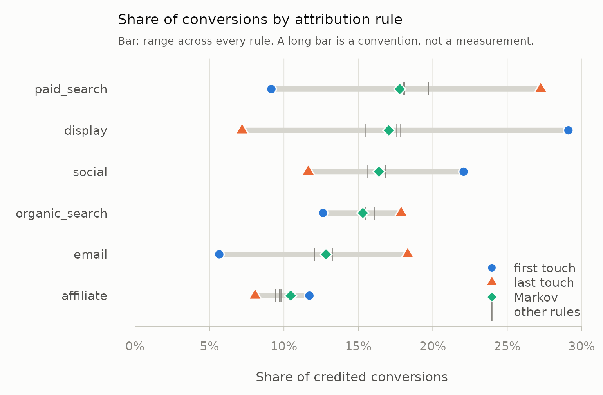
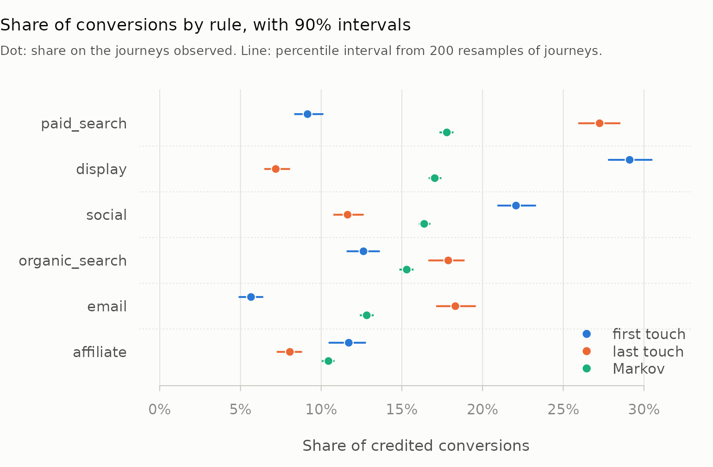

Attribution packages consume journeys:
"display > social > paid_search" strings with
conversion counts attached. Producing those strings from a raw event log
is usually left to the analyst: ChannelAttribution, for
instance, starts from the aggregated paths, on the reasonable grounds
that its job is Markov removal effects and it does that in C++.
So the step gets done in analysis code, usually as a
group_by() and a paste(collapse = " > ").
This vignette is about what that loses, which is not small, and then
about dividing credit among channels once the journeys are right.
library(mediamix)
data(mm_events)
nrow(mm_events)
#> [1] 20799
head(mm_events)
#> customer_id channel timestamp conversion value
#> 1 cust_03227 email 2025-02-10 18:08:57 0 NA
#> 2 cust_03940 2025-05-20 04:44:17 0 NA
#> 3 cust_04838 organic_search 2025-04-04 22:20:01 0 NA
#> 4 cust_00749 affiliate 2025-09-27 03:31:38 0 NA
#> 5 cust_05340 <NA> 2025-02-24 22:17:01 0 NA
#> 6 cust_05271 social 2025-02-18 19:00:56 0 NAmm_events is a synthetic log of 20,799 touchpoint events
across 5,400 customers. It contains, on purpose, everything a real
export contains: repeat converters, consecutive duplicate channels,
direct and blank and missing channel labels, customers who never
convert, timestamp ties, and rows in no particular order.
The naive approach
One path per customer, in timestamp order:
ordered <- mm_events[order(mm_events$customer_id, mm_events$timestamp), ]
naive <- split(ordered$channel, ordered$customer_id)
c(journeys = length(naive), mean_length = mean(lengths(naive)))
#> journeys mean_length
#> 5400.000 3.8525,400 journeys at a mean length of 3.85. Now the same log through
build_paths(), with its default settings:
paths <- build_paths(
mm_events,
id = "customer_id",
channel = "channel",
timestamp = "timestamp",
conversion = "conversion",
value = "value"
)
summary_built <- path_summary(paths)
summary_built
#> events_in events_out journeys converting_journeys mean_length median_length
#> 1 20799 17282 6105 2741 2.831 3
#> max_length direct_events conversion_events conversions_observed
#> 1 9 1597 2741 2741
#> conversions_unattributable journeys_before_filtering duplicate_events
#> 1 0 6105 1176,105 journeys, 13% more, at a mean length of 2.83, 27% shorter. Journey counts and lengths feed a Markov transition matrix directly, so differences of this size carry through to the final numbers.
Here is where the difference comes from, one concern at a time.
step <- function(...) {
s <- path_summary(build_paths(
mm_events, id = "customer_id", channel = "channel",
timestamp = "timestamp", conversion = "conversion", ...))
c(journeys = s$journeys, mean_length = round(s$mean_length, 2))
}
steps <- rbind(
`naive` = c(length(naive), round(mean(lengths(naive)), 2)),
`split on conversion` = step(split_on = "conversion",
collapse_repeats = FALSE),
`+ 30-day inactivity gap` = step(split_on = c("conversion", "gap"),
gap = 30, collapse_repeats = FALSE),
`+ collapse duplicates` = step(split_on = c("conversion", "gap"),
gap = 30, collapse_repeats = TRUE)
)
steps
#> journeys mean_length
#> naive 5400 3.85
#> split on conversion 6105 3.39
#> + 30-day inactivity gap 6105 3.39
#> + collapse duplicates 6105 2.83Splitting on conversion accounts for every extra journey. The three
build_paths() rows also drop the 117 exact duplicate events
in the log (dedupe = TRUE, the default). The 30-day
inactivity split changes nothing here: every gap that long in this log
comes straight after a conversion, where the journey has already been
split. Collapsing consecutive duplicates shortens the journeys
further.
The seven things that go wrong
1. Journey splitting
A customer who converts in March and again in September is two journeys. Treat them as one and March’s touchpoints take credit for September’s sale, while the journey count falls by every repeat conversion in the file.
repeat_buyers <- table(mm_events$customer_id[mm_events$conversion == 1])
table(as.integer(repeat_buyers))
#>
#> 1 2 3
#> 1509 349 178The table counts converting customers by how many times they
converted. Here 527 converted more than once, for 705 repeat
conversions, and the naive approach finds 705 fewer journeys than
build_paths().
build_paths() splits on conversion by default
(split_on = "conversion"). split_on also
accepts "gap", so a customer who disappears for four months
and comes back starts a new journey rather than extending an
eleven-month one.
2. Lookback windows
A touch two years before a conversion did not cause it. Thirty, sixty and ninety days are the standard choices, and none of them came from your data.
conversion_lag() measures how long converting journeys
take, from first touch to conversion, so you can read the window off
your own data instead:
lags <- conversion_lag(paths)
lags
#> quantile lag
#> 1 0.50 4.535
#> 2 0.75 8.793
#> 3 0.90 13.492
#> 4 0.95 16.851
#> 5 0.99 23.538
#> 6 1.00 43.165Ninety per cent of converting journeys in this log complete within about 13 days, so a 30-day window truncates almost nothing and a 90-day window is pure decoration. The tail is real, though: the slowest journey takes 43 days, so a window is a decision about which tail to discard, not a free simplification. On a considered-purchase category the same table may tell you the opposite, and reading it takes one line.
3. Non-converting journeys
These null paths are kept by default
(keep_null_paths = TRUE), and you should think hard before
changing that. as_channel_paths() counts them for each
distinct path, beside its conversions:
with_nulls <- as_channel_paths(paths)
head(with_nulls, 4)
#> path total_conversions total_null total_conversion_value
#> 1 social 98 97 13268
#> 2 paid_search 81 73 10658
#> 3 organic_search 80 84 8998
#> 4 display 79 118 9628
c(converting = sum(with_nulls$total_conversions),
null = sum(with_nulls$total_null))
#> converting null
#> 2741 33643,364 of the 6,105 journeys here never converted. Markov removal
effects, covered below, are computed against the null paths:
the transition matrix needs an absorbing failure state to compare the
conversion state with. Drop them and the conversion probability becomes
1, so every removal effect is measured against the wrong baseline and
moves up or down depending on how the dropped journeys differ from the
converting ones. markov_removal() warns when a table has
none.
4. Direct, none and missing channels
Every real log has them, and every tutorial handles them differently.
Here direct = "label" folds them into one channel:
table(build_paths(mm_events, id = "customer_id", channel = "channel",
timestamp = "timestamp", conversion = "conversion",
direct = "label")$channel)
#>
#> (direct) affiliate display email organic_search
#> 1581 1734 3011 2178 2741
#> paid_search social
#> 3203 2818"keep", the default, leaves the labels alone (naming the
unnamed ones "(blank)" and "(missing)" so they
can be referred to at all), "label" folds them into the one
"(direct)" channel above, and "drop" removes
those touches entirely. The choice moves the numbers, so it is an
argument rather than fixed behaviour buried in the source.
5. Accounting for what gets dropped
Dropping direct traffic can strip a converting journey of every touchpoint it had, including, sometimes, the touch that recorded the conversion. mediamix fixes the conversion facts before any filtering, so the conversion is never erased; it is counted and reported as unattributable. A short lookback makes this more common, because the window is measured back from the conversion even when the converting touch itself is dropped. Here direct traffic is dropped and the lookback cut to one day:
dropped <- build_paths(
mm_events, id = "customer_id", channel = "channel",
timestamp = "timestamp", conversion = "conversion",
lookback = 1, direct = "drop"
)
path_summary(dropped)[, c("conversions_observed", "converting_journeys",
"conversions_unattributable")]
#> conversions_observed converting_journeys conversions_unattributable
#> 1 2741 2540 201Those 201 conversions happened. They cannot be credited to any channel under these settings, and a pipeline that quietly reports a smaller denominator is lying by omission.
6. Consecutive duplicates
Three page views on the same channel are usually one exposure
recorded three times. Collapsing them is what takes the mean journey
length from 3.39 to 2.83 in the table above.
collapse_repeats = TRUE, the default, keeps the
first touch of each run, preserving when the channel entered
the journey. If you are using credit_time_decay(), consider
FALSE, since keeping the first of a run pushes each
channel’s apparent recency backward.
7. Deterministic ordering
Logs written at second resolution are full of ties.
build_paths() breaks them by original row order, except
that a conversion sorts after every touch sharing its timestamp, so the
same input always gives the same journeys. Without a fixed tie-break,
first-touch and last-touch results are not reproducible.
Assigning credit
mediamix has five credit rules: credit_first(),
credit_last(), credit_linear(),
credit_position() and credit_time_decay(),
plus credit_custom() for your own. Each returns the journey
table with a credit column, so they can be compared side by
side.
lin <- credit_linear(paths)
head(lin[, c("path_id", "channel", "touch_rank", "touch_n", "credit")])
#> path_id channel touch_rank touch_n credit
#> 1 cust_00001#1 organic_search 1 1 1.0
#> 2 cust_00001#2 display 1 5 0.2
#> 3 cust_00001#2 organic_search 2 5 0.2
#> 4 cust_00001#2 email 3 5 0.2
#> 5 cust_00001#2 social 4 5 0.2
#> 6 cust_00001#2 organic_search 5 5 0.2Credit sums to 1 within every converting journey, and total credit equals the number of attributable conversions. That invariant catches journeys silently dropped in construction:
c(total_credit = sum(lin$credit),
attributable = path_summary(paths)$converting_journeys)
#> total_credit attributable
#> 2741 2741attribute() runs the five rules and the Markov model
described below at once, which is the point:
res <- attribute(paths)
head(res, 8)
#> rule channel conversions share value touches
#> 1 linear paid_search 494.41 0.18037 63270 3203
#> 2 linear display 482.36 0.17598 60242 3011
#> 3 linear social 460.37 0.16796 59183 2818
#> 4 linear organic_search 425.07 0.15508 51503 2741
#> 5 linear email 329.58 0.12024 42201 2178
#> 6 linear affiliate 265.93 0.09702 33558 1734
#> 7 linear (blank) 91.17 0.03326 11382 465
#> 8 linear (none) 81.74 0.02982 9641 427Each row is one rule and channel: conversions is the
credit the channel received, share its fraction of that
rule’s total, value the conversion value credited to it,
and touches the channel’s touchpoints in every journey,
converting or not.
The spread is the finding
Any single rule gives you a number. Several rules give you the range that number could have been, which is more honest and usually more useful:
spread <- attribution_spread(res)
spread
#> channel min_share max_share mean_share spread first_last_ratio
#> 1 display 0.07187 0.29113 0.17382 0.2192630 4.0508
#> 2 paid_search 0.09157 0.27253 0.18343 0.1809559 0.3360
#> 3 email 0.05655 0.18314 0.12350 0.1265961 0.3088
#> 4 social 0.11638 0.22072 0.16554 0.1043415 1.8966
#> 5 organic_search 0.12623 0.17877 0.15471 0.0525356 0.7061
#> 6 affiliate 0.08063 0.11711 0.09861 0.0364830 1.4525
#> 7 direct 0.02225 0.02683 0.02411 0.0045738 1.0492
#> 8 (blank) 0.02955 0.03379 0.03176 0.0042353 0.9419
#> 9 (none) 0.02736 0.02982 0.02849 0.0024578 1.0133
#> 10 (missing) 0.01569 0.01637 0.01604 0.0006824 1.0233plot() draws the same table for the six channels with
the largest mean share. Each bar is the range a channel’s share covers
across all six rules, with the first-touch, last-touch and Markov shares
marked:
plot(res, n = 6)
Display’s share runs from 7% under last-touch to 29% under
first-touch, depending only on the convention chosen. That channel has
not been measured; it has been assigned a number. Paid search and email
move the other way, with their largest shares under last-touch.
channel_positions() says why. It counts how often each
channel is the only, first, middle or last touch of a converting
journey:
positions <- channel_positions(paths)
positions
#> channel only first middle last touches first_last_ratio
#> 1 paid_search 81 170 503 666 1420 0.2553
#> 2 display 79 719 437 118 1353 6.0932
#> 3 social 98 507 450 221 1276 2.2941
#> 4 organic_search 80 266 467 410 1223 0.6488
#> 5 email 46 109 363 456 974 0.2390
#> 6 affiliate 40 281 277 181 779 1.5525
#> 7 (blank) 27 54 79 59 219 0.9153
#> 8 (none) 19 57 73 56 205 1.0179
#> 9 direct 13 51 58 48 170 1.0625
#> 10 (missing) 9 35 34 34 112 1.0294Display opens journeys: it appears first about 6 times for every time it appears last, while paid search and email close them. First-touch and last-touch attribution therefore disagree about them by construction, and reporting either one alone is choosing a side of that disagreement without saying so.
Both tables carry a column called first_last_ratio, and
they are different quantities. Here it is a ratio of touchpoint
counts (6.09 for display); in attribution_spread()
above it is a ratio of credited shares (4.05). Both say display
opens journeys; they are measured in different currencies and will not
agree numerically.
The assist matrix from assisted_conversions() is the
other half of the picture:
real <- c("display", "social", "organic_search", "paid_search", "email")
assists <- assisted_conversions(paths, normalise = TRUE)
round(assists[real, real], 3)
#> assisted
#> assisting display social organic_search paid_search email
#> display 0.101 0.259 0.316 0.415 0.303
#> social 0.176 0.117 0.267 0.391 0.288
#> organic_search 0.135 0.167 0.125 0.296 0.225
#> paid_search 0.096 0.125 0.191 0.128 0.179
#> email 0.090 0.128 0.166 0.250 0.068Read a row as “this channel assisted these channels”. Display precedes paid search in 42% of the converting journeys display appears in; paid search precedes display in only 10% of its own. That asymmetry is the same finding as the first-versus-last ratio, seen pairwise rather than in aggregate.
Time decay, and the connection to adstock
credit_time_decay() spreads a conversion’s credit
backward across prior touchpoints with geometric decay, the same kernel
adstock_geometric() uses to spread spend forward, and the
same decay vocabulary. Here the half-life is three
days:
td <- credit_time_decay(paths, decay = decay_from_half_life(3))
example <- td[td$path_id == td$path_id[td$converted & td$touch_n >= 4][1], ]
example[, c("channel", "touch_rank", "time_to_conversion", "credit")]
#> channel touch_rank time_to_conversion credit
#> 2 display 1 16.525 0.009904
#> 3 organic_search 2 5.862 0.116358
#> 4 email 3 5.005 0.141849
#> 5 social 4 2.045 0.281075
#> 6 organic_search 5 0.000 0.450814A touch’s credit halves for every three days between it and the
conversion. That symmetry with adstock is not a coincidence:
vignette("spine") puts the two kernels side by side and
shows where the symmetry stops.
Data-driven attribution: Markov removal effects
The five rules above are conventions chosen in advance. The Markov model of Anderl et al. (2016) lets the journeys choose instead. It fits a transition matrix from start, through channels, to conversion or null, and credits each channel by its removal effect: the proportional fall in the probability of converting when every transition into that channel is sent to null instead.
markov_removal() fits the order-1 model exactly, from
the absorbing-chain fundamental matrix, in base R:
mk <- markov_removal(paths)
mk
#> channel removal_effect conversions share value p_without
#> 1 paid_search 0.43712 487.56 0.17788 61315 0.2527
#> 2 display 0.41872 467.04 0.17039 58734 0.2610
#> 3 social 0.40269 449.15 0.16386 56484 0.2682
#> 4 organic_search 0.37610 419.50 0.15305 52755 0.2801
#> 5 email 0.31515 351.52 0.12824 44206 0.3075
#> 6 affiliate 0.25689 286.53 0.10453 36033 0.3336
#> 7 (blank) 0.07606 84.84 0.03095 10669 0.4148
#> 8 (none) 0.06855 76.46 0.02790 9616 0.4182
#> 9 direct 0.06593 73.54 0.02683 9248 0.4194
#> 10 (missing) 0.04023 44.87 0.01637 5643 0.4309
attr(mk, "p_conversion")
#> [1] 0.449p_conversion is the baseline, the model’s probability
that a journey converts, and p_without the same probability
once the channel is removed, so removal_effect is
1 - p_without / p_conversion. Each channel’s
conversions are the converting journeys divided in
proportion to the removal effects. The null paths are what make this
work: they are how the model learns how often a journey ends in nothing,
which is why build_paths() keeps them by default.
attribute() runs this model as its "markov"
rule, so the spread table above already included it:
res[res$rule == "markov", c("channel", "conversions", "share")]
#> channel conversions share
#> 51 paid_search 487.56 0.17788
#> 52 display 467.04 0.17039
#> 53 social 449.15 0.16386
#> 54 organic_search 419.50 0.15305
#> 55 email 351.52 0.12824
#> 56 affiliate 286.53 0.10453
#> 57 (blank) 84.84 0.03095
#> 58 (none) 76.46 0.02790
#> 59 direct 73.54 0.02683
#> 60 (missing) 44.87 0.01637Markov attribution is still not incrementality. Removing a state from a chain assumes every customer who would have passed through it is lost and none finds another route to the same purchase. It is a more data-driven convention than first-touch, and a convention nonetheless.
Sampling noise and segments
The spread measures how much a share depends on the rule.
attribute(times =) measures how much it depends on the
sample: it draws the journeys with replacement times times,
reruns every rule on each draw, and adds percentile intervals, 90% by
default, as lower and upper. seed
makes them reproducible, and plot() draws each rule’s share
with its interval:
boot <- attribute(paths, rules = c("first", "last", "markov"), times = 200,
seed = 1)
boot[boot$channel == "display", c("rule", "share", "lower", "upper")]
#> rule share lower upper
#> 1 first 0.29113 0.27774 0.30526
#> 16 last 0.07187 0.06477 0.08073
#> 22 markov 0.17039 0.16656 0.17452
plot(boot, n = 6)
No interval in boot is wider than 2.8 percentage points,
while display’s share moves 22 points between rules. The intervals hold
the journey construction and each rule fixed, and they treat a
customer’s several journeys as unrelated draws.
To compare segments, such as devices or campaigns, carry the column
into the journey table with build_paths(keep =) and name it
in attribute(by =). Every rule then runs on each segment’s
journeys alone, so each rule’s shares sum to 1 within each segment. A
segment column must take one value per journey; mm_events
has none.
Handing off to ChannelAttribution
For higher-order chains, ChannelAttribution estimates
the same removal effects in C++. as_channel_paths() exports
the journeys in exactly the format it expects:
# ChannelAttribution splits paths on ">", so export with the same separator.
ca <- as_channel_paths(paths, sep = ">")
head(ca, 4)
#> path total_conversions total_null total_conversion_value
#> 1 social 98 97 13268
#> 2 paid_search 81 73 10658
#> 3 organic_search 80 84 8998
#> 4 display 79 118 9628
ChannelAttribution::markov_model(
ca, var_path = "path",
var_conv = "total_conversions", var_null = "total_null", sep = ">"
)
#>
#> Number of simulations: 100000 - Convergence reached: 1.90% < 5.00%
#>
#> Percentage of simulated paths that successfully end before maximum number of steps (10) is reached: 99.11%
#>
#> [1] "*** Install ChannelAttribution Pro for free running install_pro(). Visit https://channelattribution.io for more info. Set flg_pro=FALSE to hide this message."
#> channel_name total_conversions
#> 1 social 450.45
#> 2 paid_search 493.05
#> 3 organic_search 417.43
#> 4 display 464.31
#> 5 email 356.17
#> 6 affiliate 279.04
#> 7 (blank) 82.17
#> 8 (none) 75.87
#> 9 direct 75.62
#> 10 (missing) 46.88For order = 1, ChannelAttribution and
markov_removal() should agree up to ChannelAttribution’s
simulation error.
What attribution cannot tell you
Rule-based attribution is a bookkeeping convention, not a causal estimate. It divides observed conversions among observed touchpoints according to a rule you chose. It cannot tell you what would have happened if a channel had not run, because that outcome is not in the log. No rule, however sophisticated, recovers a counterfactual from data that does not contain one. Only an experiment, or a credible quasi-experiment, does.
Well-built journeys make the bookkeeping honest, comparable across rules, and reproducible. That is worth a great deal. It is not incrementality.
References
Anderl, E., Becker, I., von Wangenheim, F. and Schumann, J. H. (2016). Mapping the customer journey: Lessons learned from graph-based online attribution modeling. International Journal of Research in Marketing, 33(3), 457–474. https://doi.org/10.1016/j.ijresmar.2016.03.001